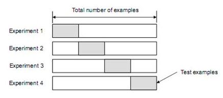
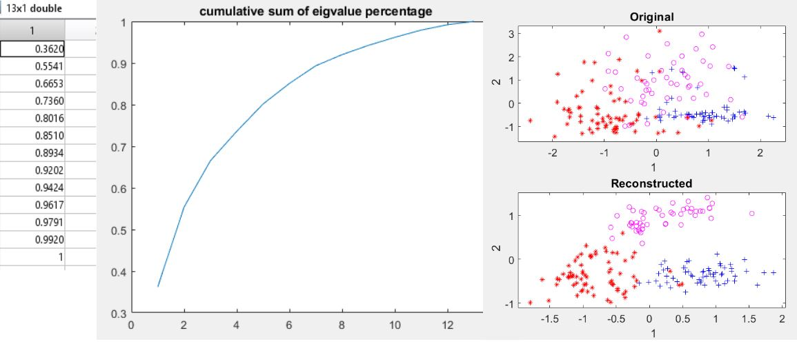
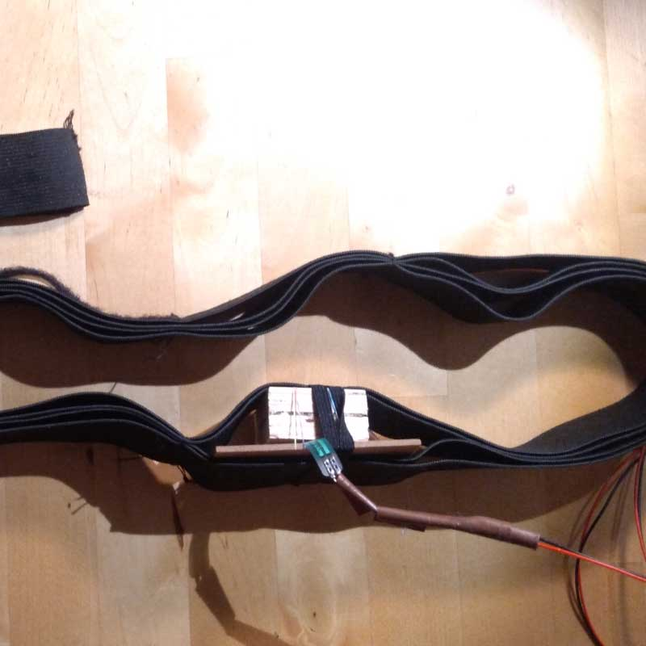
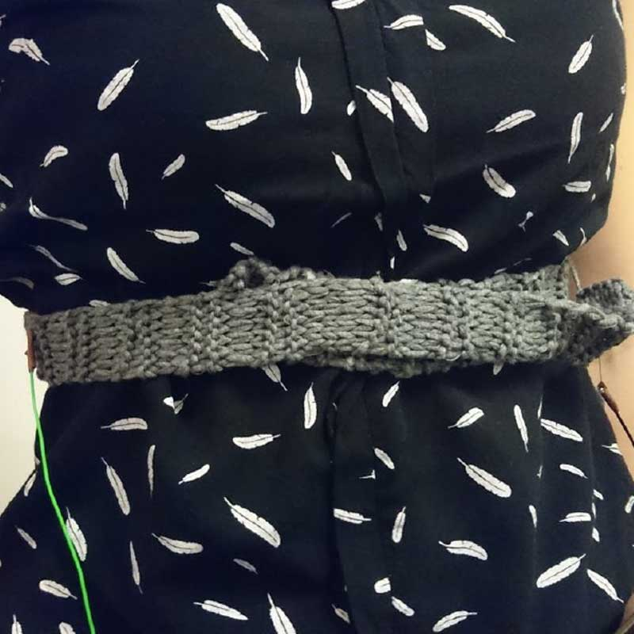
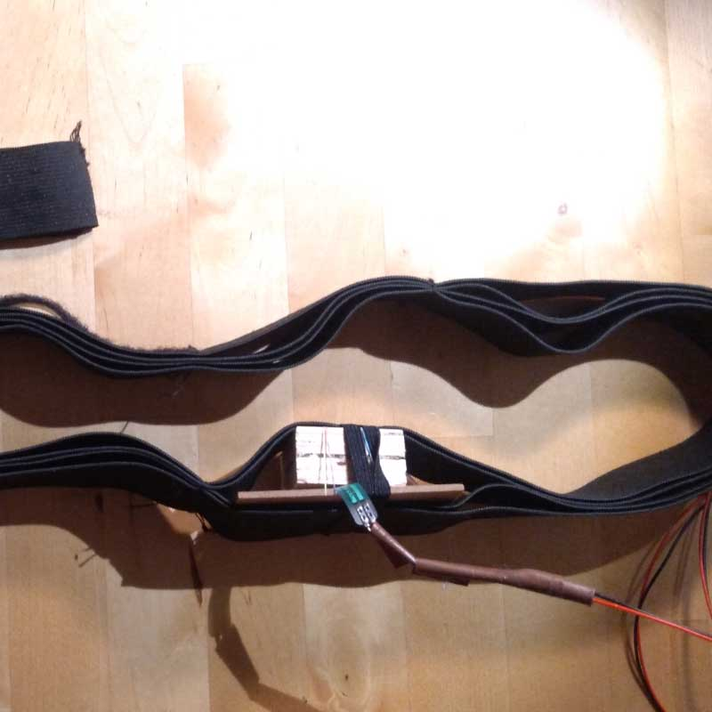
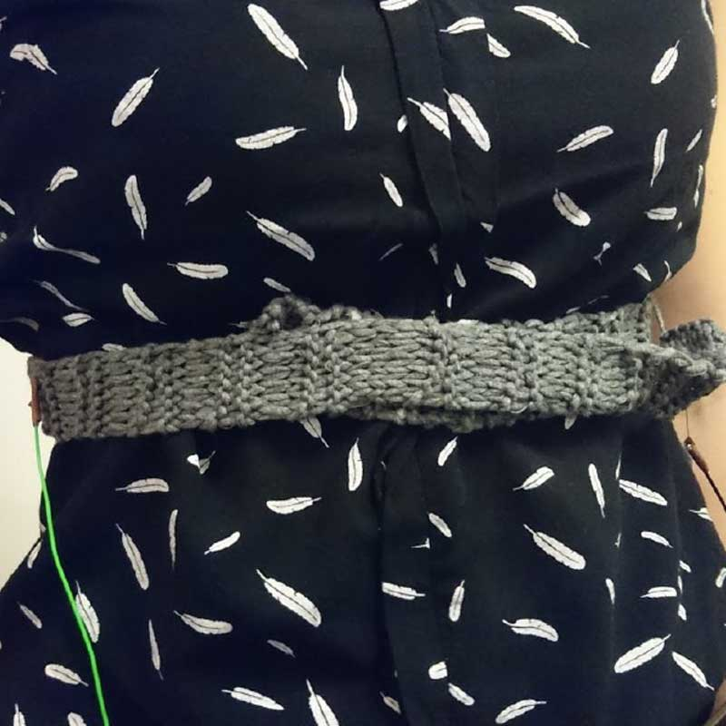
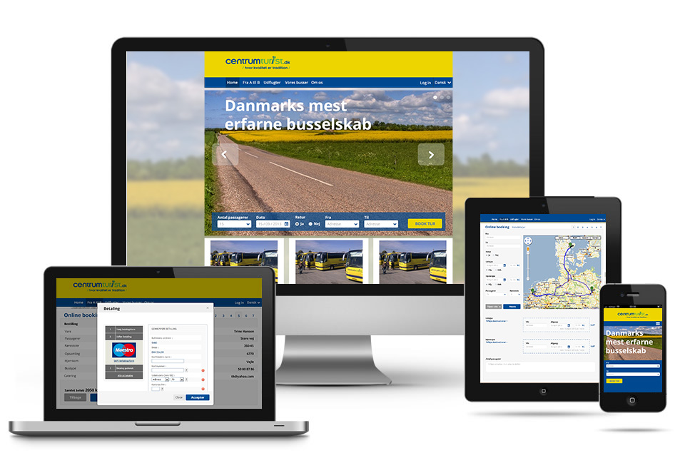

15 Jan 2019
Prototyping and fabrication
Laser cut candle holder
Wave graphic was drawn in Illustrator and the 3D shape designed in Fusion 360. The final graphic was laser cut on 3mm MDF (medium-density fiberboard).
8 Jan 2019
Machine learning
Classifier evaluation
Wine dataset was tested and trained using NMSC (Nearest mean classifier), LDC (Linear discriminant classifier), QDC (Quadratic discriminant classifier) and k-nn (n-nearest neighbors). To evaluate which classifier fits the best n-fold crossvalidation was used. The best results were calculated using confusion matrix. A typical multiclass performance measure is accuracy and error rate. Other measures are: precision, recall, f-measure, but those should be calculated for each class seperately.
N-fold cross validation
This validation type is recommended, because it uses testing data efficiently (testing data is very precious :o).
NMSC, LDC, DQC and KNN compared
NMSC: assumes that data is distributed in identity matrice. Parametric classifier.

LDC:based on Bayes rule, assumes a common covariance matrix for each class,but individual mean and liner
distribution border.
QDC:based on Bayes rule, assumes different covariance matrices, different means and hyperbole border.
KNN: non-parametric classifier, classifies according to the majority of the closest neighbors.

Multi class confusion matrix
Accuracy:(39+35+19)/125=0.74

Matlab implementation
%% Preparing prdatasets
wineDataOriginal = prdataset(X, wineType);
wineDataReconstructed = prdataset(Xr, wineType);
%randomizing order of dataset
[Xrows, Xcolumns] = size(X);
rand_idx = randperm(Xrows);
%divide data into training and testing dataset
training_idx = rand_idx(1:125); % 70% indices for training set
test_idx = rand_idx(125:178); % 30% indices for test set
%data with original features
X_tr = prdataset(X(training_idx, :), wineType(training_idx));
X_test = prdataset(X(test_idx, :), wineType(test_idx));
%reconstructed data
Xr_tr = prdataset(Xr(training_idx, :), wineType(training_idx));
Xr_test = prdataset(Xr(test_idx, :), wineType(test_idx));
%% Parametric classifier crossvalidation
%three parametric classifers (1-nmsc, 2-ldc, 3-qdc)
for classifier = 1:3
switch classifier
case 1
%minimum distance classifier
w = nmsc([]);
case 2
%linear discriminant classifier
w = ldc([]);
case 3
%quadratic discriminant classifier
w = qdc([]);
end
%5-fold cross validation for each classifier
% ERR Average test error
% CERR Unweighted test errors
% PRED_LAB Assigned numeric labels
[ERR,CERR,PRED_LAB] = prcrossval(X_tr,w,5); %classifier cannot be trained for crossval
%calculate confusion matrix
cm = confmat(wineType(training_idx), PRED_LAB);
confmat(wineType(training_idx), PRED_LAB); %display cofusion matrix
%accuracy - correctly identified predictions for each class
accuracyCV = sum(diag(cm))/sum(sum(cm)) %(same as 1-ERR)
%calculate how many wrong classifications
errors=PRED_LAB~= wineType(training_idx);
totalErrorsCV = sum(errors)
end
%% Train parametric classifiers and compare the confusion matrix with testing data from crossvalidation results
%three parametric classifers (1-nmsc, 2-ldc, 3-qdc)
for classifier = 1:3
switch classifier
case 1
%minimum distance classifier
w_tr = nmsc(X_tr);
case 2
%linear discriminant classifier
w_tr = ldc(X_tr);
case 3
%quadratic discriminant classifier
w_tr = qdc(X_tr);
end
PRED_LAB_TEST = X_test*w_tr*labeld;
%calculate confusion matrix
cm = confmat(wineType(test_idx), PRED_LAB_TEST);
confmat(wineType(test_idx), PRED_LAB_TEST); %display cofusion matrix
%accuracy - correctly identified predictions for each class
accuracyTEST = sum(diag(cm))/sum(sum(cm)) %(same as 1-ERR)
%calculate how many wrong classifications
errors=PRED_LAB_TEST~= wineType(test_idx);
totalErrorsTEST = sum(errors)
end
%% Parametric classification crossvalidation on reconstructed data
%three parametric classifers (1-nmsc, 2-ldc, 3-qdc)
for classifier = 1:3
switch classifier
case 1
%minimum distance classifier
w2 = nmsc([]);
case 2
%linear discriminant classifier
w2 = ldc([]);
case 3
%quadratic discriminant classifier
w2 = qdc([]);
end
%5-fold cross validation for each classifier
% PRED_LAB Assigned numeric labels
[ERR,CERR,PRED_LAB] = prcrossval(Xr_tr,w2,5);
%calculate confusion matrix
cm = confmat(wineType(training_idx), PRED_LAB);
confmat(wineType(training_idx), PRED_LAB); %display cofusion matrix
%accuracy - correctly identified predictions for each class
accuracyPCA = sum(diag(cm))/sum(sum(cm)) %(same as 1-ERR)
%calculate how many wrong classifications
errors=PRED_LAB~=wineType(training_idx);
totalErrorsPCA = sum(errors)
end
%% Train parametric classifiers and compare the confusion matrices with reconstructed data
%three parametric classifers (1-nmsc, 2-ldc, 3-qdc)
for classifier = 1:3
switch classifier
case 1
%minimum distance classifier
w2_tr = nmsc(Xr_tr);
case 2
%linear discriminant classifier
w2_tr = ldc(Xr_tr);
case 3
%quadratic discriminant classifier
w2_tr = qdc(Xr_tr);
end
PRED_LAB_TEST = Xr_test*w2_tr*labeld;
%calculate confusion matrix
cm = confmat(wineType(test_idx), PRED_LAB_TEST);
confmat(wineType(test_idx), PRED_LAB_TEST); %display cofusion matrix
%accuracy - correctly identified predictions for each class
accuracyPCA_TEST = sum(diag(cm))/sum(sum(cm)) %(same as 1-ERR)
%calculate how many wrong classifications
errors=PRED_LAB_TEST~= wineType(test_idx);
totalErrorsPCA_TEST = sum(errors)
end
%% non-parametric classifier k-nn crossvalidation on original data
%k-nn classifers with 1, 2, 5 nearest neighbors
for knnClassifier = 1:3
switch knnClassifier
case 1
w3 = knnc([],1);
case 2
w3 = knnc([],2);
case 3
w3 = knnc([],5);
end
%5-fold cross validation for each classifier
% ERR Average test error
% CERR Unweighted test errors
% PRED_LAB Assigned numeric labels
[ERR,CERR,PRED_LAB] = prcrossval(X_tr,w3,5);
%calculate confusion matrix
cm = confmat(wineType(training_idx), PRED_LAB);
confmat(wineType(training_idx), PRED_LAB); %display cofusion matrix
%accuracy - correctly identified predictions for each class
accuracyKNN = sum(diag(cm))/sum(sum(cm)) %(same as 1-ERR)
%calculate how many wrong classifications
errors=PRED_LAB~=wineType(training_idx);
totalErrorsKNN = sum(errors)
end
%% Train knn classifiers and compare the confusion matrix with testing data from crossvalidation results
for classifier = 1:3
switch classifier
case 1
w3_tr = knnc(X_tr,1);
case 2
w3_tr = knnc(X_tr,2);
case 3
w3_tr = knnc(X_tr,5);
end
PRED_LAB_TEST = X_test*w3_tr*labeld;
%calculate confusion matrix
cm = confmat(wineType(test_idx), PRED_LAB_TEST);
confmat(wineType(test_idx), PRED_LAB_TEST); %display cofusion matrix
%accuracy - correctly identified predictions for each class
accuracyKNN_TEST = sum(diag(cm))/sum(sum(cm)) %(same as 1-ERR)
%calculate how many wrong classifications
errors=PRED_LAB_TEST~= wineType(test_idx);
totalErrorsKNN_TEST = sum(errors)
end
5 Jan 2019
Machine learning
PCA - Principal Component Analysis
PCA is used to simplify datasets in order to save space and time when processing or classifing data. It can also be used as a non-parametric classifier to reveal unknown features about the data. The key idea is to keep the dataset variance as high as possible, but reduce high dimensionality to lower dimensions.
What is PCA again??
The example below is using Wine dataset from the Machine Learning Repository. It has 3 classes and 13 chemical features. With the help of PCA it was possible to reduce the dataset to 2 features and still classify the dataset with good results.
Results before applying z-score

Results after applying z-score
Matlab implementation
fid = fopen('wine.data');
data=textscan(fid, '%f%f%f%f%f%f%f%f%f%f%f%f%f%f%s', 'delimiter', ',');
fclose(fid);
X=[data{2} data{3} data{4} data{5} data{6} data{7} data{8} data{9} data{10} data{11} data{12} data{13} data{14} ]; %feature matrix - each column a feature, first column removed because it reperesent the wine type
wineType = data{1};
originalSTD = std(X);
originalMean = mean(X);
X= zscore(X);
Xlength = length(X); %to get the correct row number
Xmean = mean(X); %mean(average)
% 1 - centering data
Xcentered = X - ones(Xlength,1) * Xmean; % ones(Xlength,1)- populate column vector with number 1
% 2 - calculating covariance
Xcov = cov(Xcentered);
% 3 - eigenvalue decomposition
[V1 D]=eig(Xcov);
eigenval1 = diag(D);
% 4 - sorting
[eigenval idx]=sort(eigenval1, 'descend');
V=V1(:,idx); %eigenvectors sorted
% 5 - plot eigenvectors
f4=figure; linmod ={'r', 'b' ,'m', 'g', 'k', 'c','r', 'b' ,'m', 'g', 'k', 'c','r'};
hold on;
for j=1:13
plot(V(:,j), linmod{j})
end
title('eigen vectors')
% 6 - cumulative sum of eigvalue percentage
%the measure how much the variance is preserved
%Check the graph for knee to decide how many dimensions to keep
cs = cumsum(eigenval)/sum(eigenval);
f = figure;
plot(cs);
title('cumulative sum of eigvalue percentage');
% First two eigenvectors together have 99.9998 variance. Wine dataset would
% be well represented by choosing first two eigenvectors.
% 7 - reduction to 2 dimension (projection on eigenvectors with highest
% eigenvalues)
scores= Xcentered*V(:,1:2);
% 8 - reconstruction of original data based on 2 eigenvectors
Xr = scores*V(:,1:2)'+ones(Xlength,1)*Xmean;
% 9 - plot and compare
%Plot the features for the reconstructed data and the original data.
prReconData = prdataset(Xr , wineType);
prOrginalData = prdataset(X, wineType);
figure
subplot(2,1,1)
scatterd(prOrginalData);
title('Original')
subplot(2,1,2)
scatterd(prReconData);
title('Reconstructed')
28 Nov 2018
Prototyping and fabrication
DIY breathing tracker
FSR and conductive yarn belt prototypes were built, to experiment what would be a quick and accurate way to track breathing. FSR sensor turned out to be the most accurate and sensitive implementation, but it underwent only one testing-building iteration cycle, so the prototype has to be rebuilt to make it wireless and more comfortable.
Tools: Arduino Uno Microprocessor board, FSR(Force sensitive resistor), Conductive yarn (from Adafruit), Arudino IDE (to activate sensors), Processing IDE (to record data for postprocessing).
 



Processing IDE code to save data
//SERIAL LISTENER
import processing.serial.*;
Serial myPort;
String val;
void setup()
{
Init();
String portName = Serial.list()[0];
myPort = new Serial(this, portName, 9600);
myPort.bufferUntil(10);
}
void draw()
{
}
void serialEvent (Serial myPort)
{
if ( myPort.available() > 0)
{
val = myPort.readString();
if(val!=null){
val = val.substring(0, val.length()-2);
if(!val.equals("done")){
Add(val);
println("adding "+val+"|");
}else{
Save();
println("Done");
}
}
}
}
//SAVING
boolean saved = false;
ArrayList list;
String fileName = "out.txt";
//Output
void Init(){
list = new ArrayList();
}
void Add(String val){
list.add(val);
}
void Save(){
saveStrings(fileName, list.toArray(new String[list.size()]));
}
Arduino IDE code to activate sensors
const int buttonPin = 2;
const int fsrPin = 0;
const int irPin = 1;
const int ledPin = 7;
int buttonState = 0;
int maxSize = 8;
int stackSize = 0;
float stackFsr = 0;
float stackIr = 0;
float prevFsr = 0;
float threshold = 0;
boolean on = false;
boolean done = false;
boolean switched = false;
boolean saved = false;
boolean first = true;
void setup() {
pinMode(buttonPin, INPUT);
pinMode(ledPin, OUTPUT);
Serial.begin(9600);
}
void loop() {
delay(5);
//Sensors
buttonState = digitalRead(buttonPin);
float fsr = analogRead(fsrPin);
float ir = analogRead(irPin);
//Button
if (buttonState == HIGH && !switched) {
if(on)
done = true;
else
done = false;
on = !on;
switched = true;
} else if(buttonState == LOW){
switched = false;
}
//LED
if(on)
digitalWrite(ledPin, HIGH);
else
digitalWrite(ledPin, LOW);
//Test sensor
//Serial.println(fsr);
//Send to Saving Script
if(done && !saved){
//Serial.print(fsr);
Serial.println("done");
saved = true;
}else if(!first && on){
//Stacking
if(stackSize < maxSize){
/*stackIr += ir;
stackFsr += fsr;*/
stackSize ++;
}else{
Serial.print(fsr);
Serial.print(",");
Serial.println(ir);
/*float diff = sqrt(pow(stackFsr - prevFsr, 2));
if (diff > threshold) {
Serial.println(diff);
}
prevFsr = stackFsr;*/
/*stackIr = 0;
stackFsr = 0;*/
stackSize = 0;
/*stackIr += ir;
stackFsr += fsr;*/
}
}
else if(on){
Serial.println("FSR,IR");
first = false;
}
}
Dec 2017
UI
Frontend development
Mobile UI and frontend development
Mobile app designed and developed for a shared office management.
User interface designed in Adobe XD and app development with Ionic framework.
Apr 2015
Frontend development
Frontend development
Frontend development for a repair services website.
Made using Html5, Sass, jQuery, Bootstrap.
Dec 2015
Motion graphics
3D animation
Animation made using Maya and real life camera tracking made using Boujou software.
Project was done individually as a part of the 3D animation course.
Location: beach near Seoul, South Korea.
May 2013
UI
UI design for eCommerce
Design, payment flow research and prototyping for the Centrumturist web app.

Jan 2013
Motion graphics
Stop motion
Stop motion storytelling with 433 photos, Photoshop, After Effects, Premiere Pro.